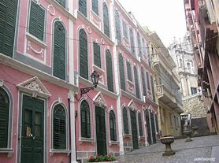

| Ruins of St Paul's | Senado Square | A Ma Temple |
|---|---|---|
 |
 |
 |
| In the morning,you can walk to St Paul's from Senado Square.It is open every day. There are plenty of restaurants nearby to have breakfast. Plan to stay: Less than 1 hour. | At 10am,we will go to the Mandarin's House,place between A-Ma Temple and Senado Square.Senado Square opens at 12am to 12pm. There are many traditional restaurants to sample cuisine. Plan to stay: 1-2 hours. | The temple is so crowded so you'll need to be patient or arrive early. Admission is free. Plan to stay: 1-2 hours. |
| Macau Tower | Guia Fortress | Venetian and Parisian Macao |
|---|---|---|
 |
 |
 |
| It opens at 6am to 9pm.So, you can get breakfast at Macau Tower, a great place of 360 degree restaurant. You can try Skyjump there. Plan to stay: 1-2 hours. | Guia Fortress and Information Centre opens from 9am to 6pm.Admission is free but no admission after 5:30pm. Guia Chapel opens from 10am to 5pm.So,we can go at 10am. Plan to stay: 2hours. | Venetian Macau has many entertainment and interesting things. You can enjoy many shows like Monkey king show, So man show. Plan to stay: 4-5 hours. |
| Rua du Cunga | Travessa da Paixao | Kun Iam Ecumenical |
|---|---|---|
 |
 |  |
| It opens from 10am to 9pm. You can bring Macau signature good back home to share with friends and you can find many on this street. Plan to stay: 2hours. | It opens from 10am to 8pm and closes on Monday. For your lunch,Travessa da Paixao has many restaurants, coffee shops by relishing great food around. Plan to stay: More than 2hours | It opens from 10am to 6pm and closed on Friday. The centre will be open to public two hours after the Typhoon Warning Signal is lowered. Plan to stay: 1-2 hours. |
| St Dominic Church | Galaxy Macau | City of Dreams Casio |
|---|---|---|
 |
 |
 |
| It is a worth visiting place. You can go there from 10am to 6pm. The famous Ginger Milk shop YiShun is just next to the shop beside this church for breakfast. Plan to stay: 2hours. | Galaxy Macau is a great Entertainment centre of Macau with hotels, resturants, and impressive things. You can enjoy many entertainment activities.We will go at 2pm. Plan to stay: 5 hours. | The site was improved with trees, a small pool, a playground, a sandbox, and permanent game tables. You can go there at 8pm. Plan to stay: 2hours. |
| Macao Giant Panda Pavilion | Macau Wine Museum | Sun Yat Sen Park |
|---|---|---|
 |
 |
 |
| It opens at 10am-1pm and 2pm-5pm on Tusday to Sunday. So,you can start your last day trip from Macao Giant Panda Pavilion at 10am. Plan to stay: More than 3 hours. | The Macau Wine Museum is a wine museum and it is co-located next to the Grand Prix Museum. It opens from 10am to 6pm and closes on Tusdays. Plan to stay: 1hour. | It opens from 6am to 11pm and you can end your trip at Sun Yat Sen park. The site was improved with trees, a small pool, a playground, a sandbox, and permanent game tables. Plan to stay: 2hours |
| Price List | |
|---|---|
| Numbers of people | Usual Price |
| Single | $3000 |
| Dual | $6000 |
| Triple | $9000 |
| Four and above | $2700 for each |